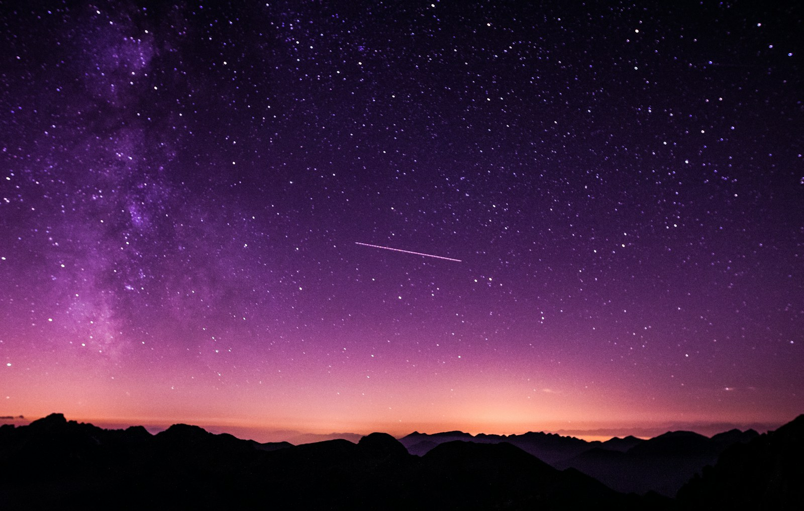

Двор как общий дом: новая жизнь старых кварталов
ППространство · 42 тыс. просмотров

Астрофотографы отправляются за Полярный круг, чтобы снять ночь без городского света.
Документальные проекты и лекции, которые обсуждают зрители
ППространство · 42 тыс. просмотров
ШШкола звука · 18 тыс. просмотров
ДДальняя сторона · 96 тыс. просмотров
Новые фильмы и разговоры без алгоритмической гонки
ЕЕстественно · 12 тыс. просмотров
РРемесло · 27 тыс. просмотров
ССмена · 53 тыс. просмотров
ФФорма · 104 тыс. просмотров
Авторы, которые недавно открыли публичные коллекции
ЗЗемная станция · 8 тыс. просмотров
ССмена города · 21 тыс. просмотров
ККарта ветра · 15 тыс. просмотров
ЗЗа сценой · 33 тыс. просмотров
ППонятная наука · 72 тыс. просмотров
ККадр за кадром · 19 тыс. просмотров
По вашему запросу ничего не найдено. Попробуйте другое слово.
Полные версии премьер доступны участникам предпросмотра.
Используйте почту, на которую пришло приглашение к предпросмотру.
Аккаунт не найден в текущей волне предпросмотра. Токен выдаётся киноклубами и авторам каналов.